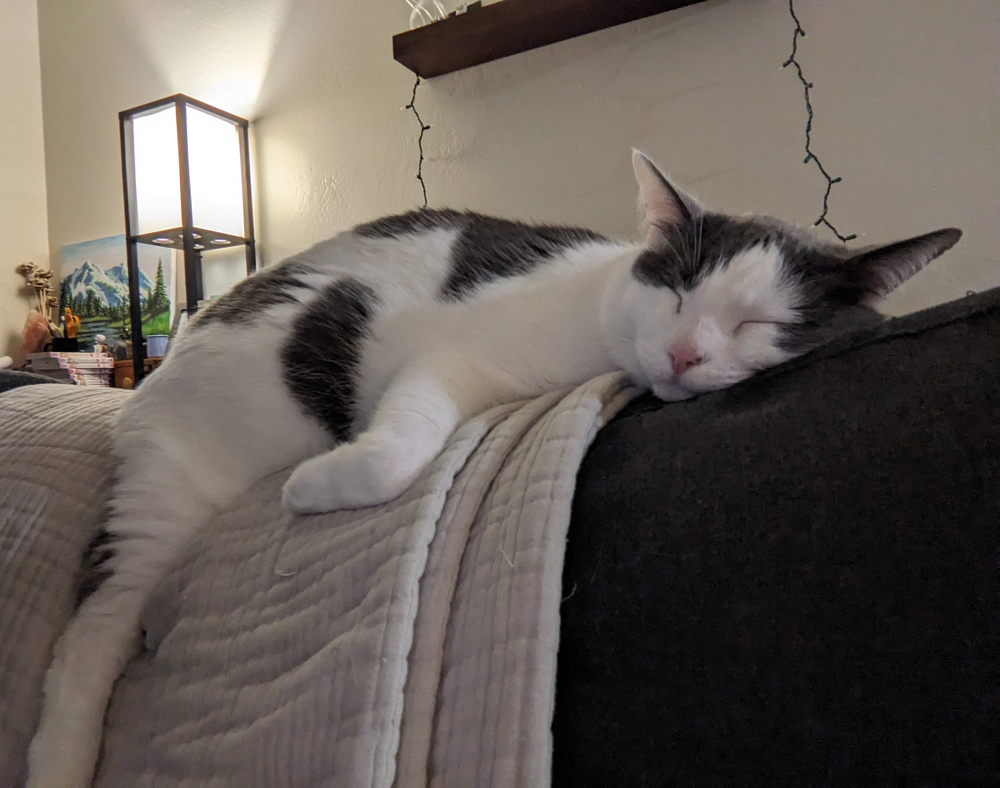
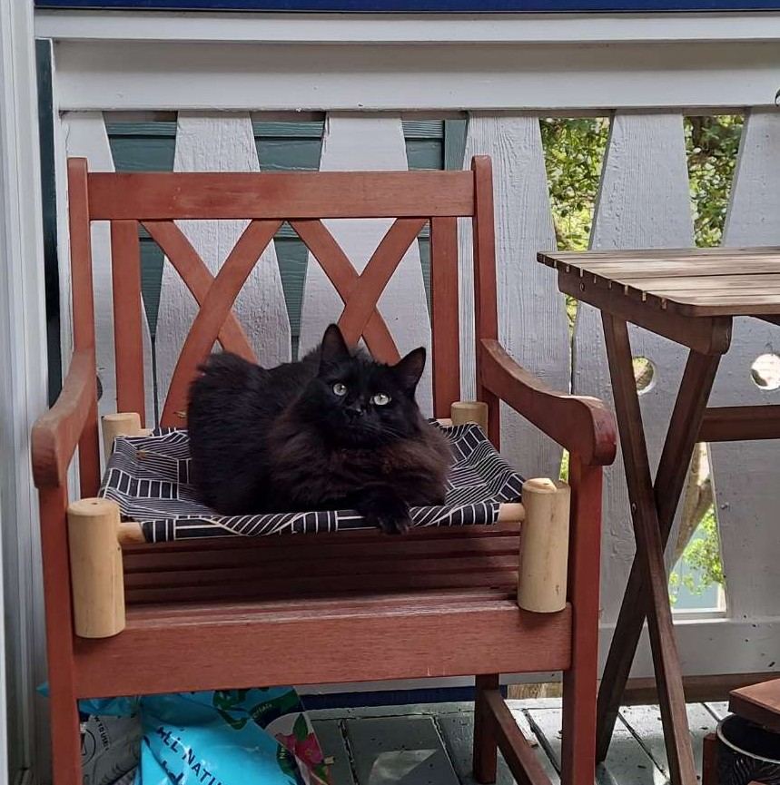
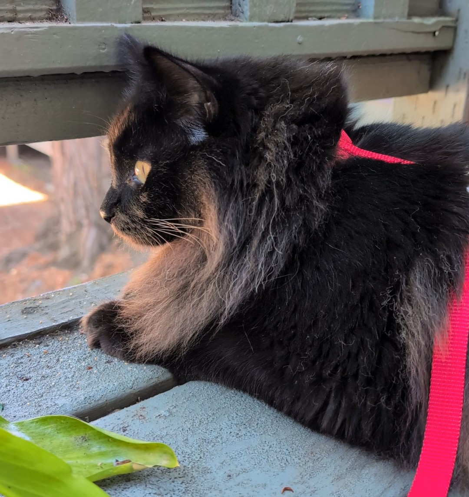
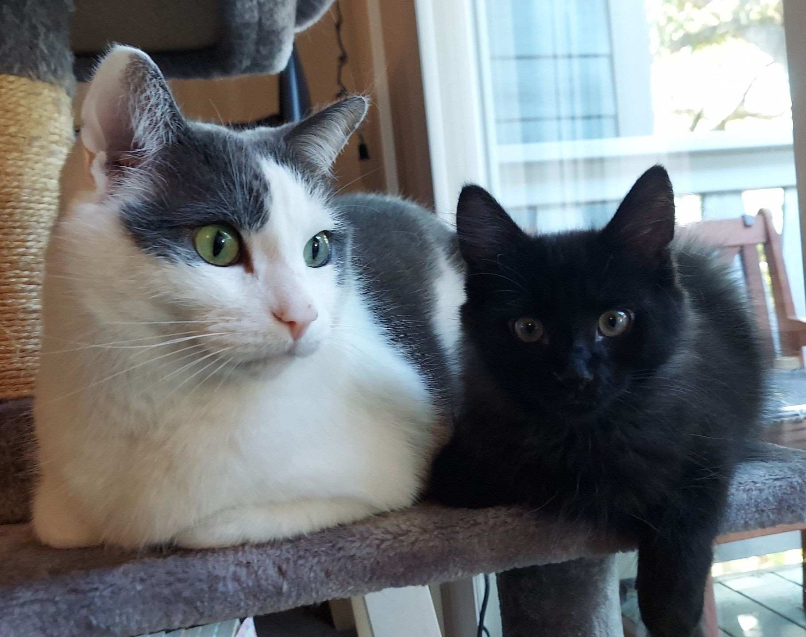
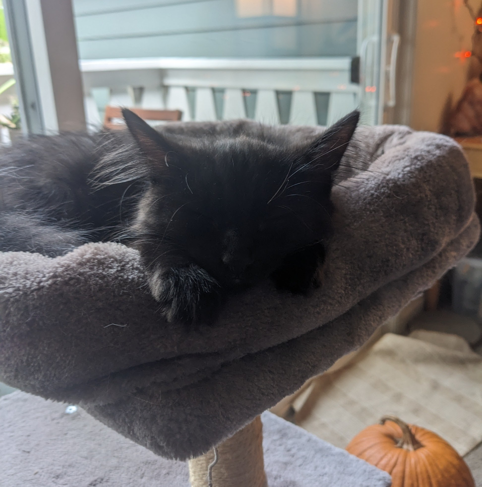
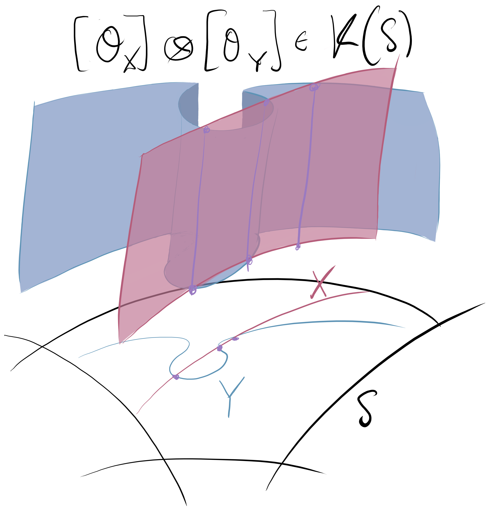
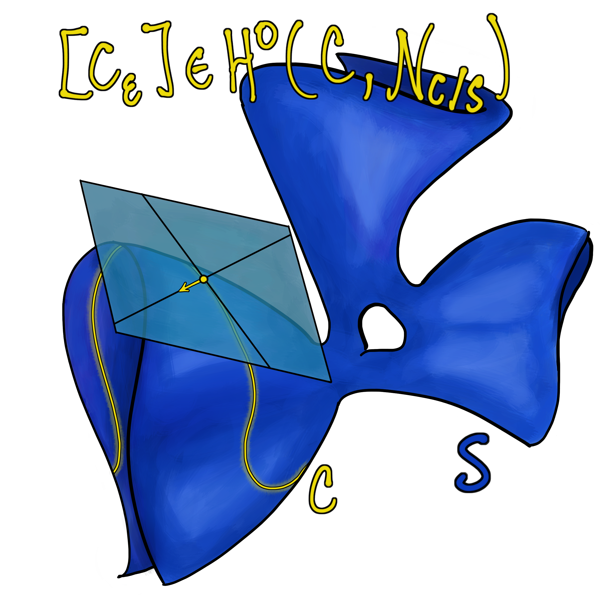

I’m from Chico, California. Chico is a beautiful city in Northern California that's known for its Bidwell Park, one of the largest municipal parks in the US.
I did my undergraduate studies at the California State University in Chico from 2013-2015. I am a first-generation college graduate. Afterwards, I moved to Edmonton in Alberta, Canada for my graduate studies. From 2015-2019, I was a PhD student at the University of Alberta; my advisor was Nikita Karpenko.
From January to August 2020, I was a postdoctoral fellow at the University of Victoria in British Columbia, Canada under the supervision of Stephen Scully. From August 2020 to July 2023, I was a Sergei Novikov postdoctoral fellow at the University of Maryland in College Park; my supervisors were Niranjan Ramachandran and Patrick Brosnan.
Since the Summer of 2023, I’ve been back in California. During the 2023-2024 academic year, I was a lecturer at the University of California, San Diego. From July 2024 to February 2026, I was a Visiting Assistant Professor at the University of California, Santa Cruz. From February to June 2026, I was a Math Fellow at UC Santa Cruz. At present, I'm an Assistant Project Scientist at UC Santa Cruz.
My partner and I have two cats: Chacho and Megumi.





I've occassionally tried to draw some mathematical concepts, in more or less abstract ways. Here are some of the pictures that have served as images for my homepage in the past.


